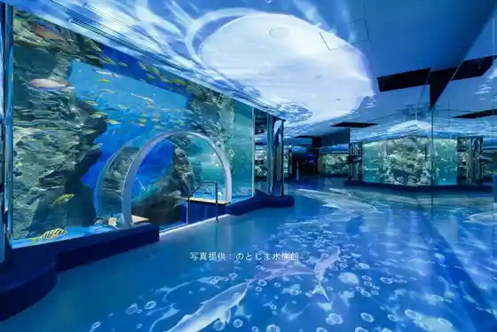
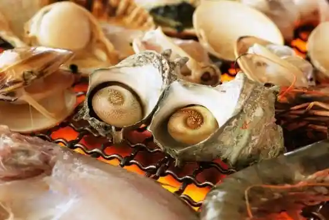
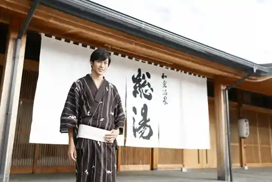
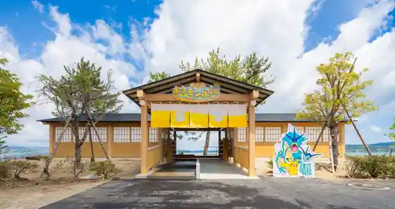

no Tojima Aquarium
Nanao, Ishikawa · 0767-84-1271 · Official / source link

Roadside Station Noto Shoku Matsuri Market
Nanao, Ishikawa · 0767-52-7071 · Official / source link

Wakura Onsen
Nanao, Ishikawa · 0767-62-1555 · Official / source link

Wakura Onsen Yu Tsu Tari Park
Nanao, Ishikawa · Official / source link

Ishikawaken Noto Shima Garasu Art Museum
Nanao, Ishikawa · 0767-84-1175 · Official / source link
Noto Shima Bridge
Nanao, Ishikawa · 0767-52-5102 · Official / source link
Wakuraonsen Soyu
Nanao, Ishikawa · 0767-62-2221 · Official / source link
Noto Shima
Nanao, Ishikawa · 0767-84-1113 · Official / source link
Noto Engeki Do
Nanao, Ishikawa · 0767-66-2323 · Official / source link
Tsuimburijji no to Zantei Kyoyo
Nanao, Ishikawa · 0767-53-8510 · Official / source link
Noto Shima Garasu Workshop
Nanao, Ishikawa · 0767-84-1180 · Official / source link
Roadside Station
Nanao, Ishikawa · 0767-84-0225 · Official / source link
Nanao Bunka Horu (Kyu : Nanao Sanraifu Plaza)
Nanao, Ishikawa · 0767-53-1160 · Official / source link
Ipponsugi Tori
Nanao, Ishikawa · 0767-53-8743 · Official / source link
Hanayome no Ren Kan
Nanao, Ishikawa · 0767-53-8743 · Official / source link
Ishikawaken Nanao Art Museum
Nanao, Ishikawa · 0767-53-1500 · Official / source link
no Tojima Aquarium no to Kaiyu Kairo
Nanao, Ishikawa · 0767-84-1271 · Official / source link
no to Satoyama Sato Umi Museum
Nanao, Ishikawa · 0767-57-5100 · Official / source link
Wakuraonsen O Matsuri Hall
Nanao, Ishikawa · 0767-62-4332 · Official / source link
Komaru Yama Castle Park
Nanao, Ishikawa · 0767-52-9266 · Official / source link
Roadside Station Nakajima Roman Toge
Nanao, Ishikawa · 0767-66-0155 · Official / source link
Bessho Gaku Sukaidekki (Noto Yumeterasu)
Nanao, Ishikawa · 0767-22-6090 · Official / source link
Nanao Shiroyama Lookout
Nanao, Ishikawa · 0767-53-8424 · Official / source link
no Tojimaku Pon 2026 Nen 6 Gatsu Yori Saikai
Nanao, Ishikawa · 0767-62-1555 · Official / source link
Wakura Showa Museum Tomocha Kan
Nanao, Ishikawa · 0767-62-1161 · Official / source link
no Tojima Rinkai Koen Umi Zuri Center
Nanao, Ishikawa · 0767-84-1271 · Official / source link
Roadside Station Iori
Nanao, Ishikawa · 0767-59-1415 · Official / source link
Nanao Castle Ruins Ichibu Heisachu
Nanao, Ishikawa · 0767-53-8437 · Official / source link
Misomanju Honpo Takeuchi
Nanao, Ishikawa · 0767-68-2053 · Official / source link
Reiwa 8 Nen Satoyama Sato Umi Festival Gekkan
Nanao, Ishikawa · 0767-57-5100 · Official / source link
Tsujiguchi Hironobu Art Museum Reiwa 6 Nen (2024 Nen) Noto Han Shima Jishin no Eikyo Niyori Tomen no Kan Kyugyochu
Nanao, Ishikawa · 0767-62-4000 · Official / source link
Nakajima Sarutahiko Onsen Iyashi Baths
Nanao, Ishikawa · 0767-66-8686 · Official / source link
Nanao Shiro Shi Museum
Nanao, Ishikawa · 0767-53-4215 · Official / source link
Seirin Tera Kyakuden (Wakura Onsen) Reiwa 6 Nen (2024 Nen) Noto Han Shima Jishin no Eikyo Niyori Tomen no Kan Haikan Chushi O Shuin Haitadakemasu
Nanao, Ishikawa · 0767-62-2836 · Official / source link
Noto Shima Kazokuryoko Village We Land
Nanao, Ishikawa · 0767-84-1880 · Official / source link
Wakura Onsen Yumoto no Plaza
Nanao, Ishikawa · 0767-62-1555 · Official / source link
Wakuraonsen Kanko Koryu Center
Nanao, Ishikawa · 0767-62-2221 · Official / source link
(Jidai no Kiroku - Nemure Ru Mo no Tachi no Sasayaki - vol.5)
Nanao, Ishikawa · 0767-57-5100 · Official / source link
Otearai Ike
Nanao, Ishikawa · 0767-53-8424 · Official / source link
Fishing Port
Nanao, Ishikawa · 0767-84-1113 · Official / source link
Nanao Kibo no Oka Park
Nanao, Ishikawa · 0767-52-9266 · Official / source link
Torii Shoyu Mise Reiwa 6 Nen (2024 Nen) Noto Han Shima Jishin no Eikyo Niyori, Yoko no Katteguchi no Karitenpo De Eigyo Shiteorimasu
Nanao, Ishikawa · 0767-52-0368 · Official / source link
Takazawa Rosoku Mise Genzai Karitenpo De Eigyochu
Nanao, Ishikawa · 0767-53-0406 · Official / source link
Hyokkori Onsen Shima Baths Reiwa 6 Nen (2024 Nen) Noto Han Shima Jishin no Eikyo Niyori Tomen no Kan Hensoku Eigyo Koshiki Saito no Joho Wogo Kakunin Kudasai
Nanao, Ishikawa · 0767-84-0033 · Official / source link
Wakuraonsen Rentasaikuru Reiwa 6 Nen (2024 Nen) Noto Han Shima Jishin no Eikyo Niyori Tomen no Kan Rinji Kyugyochu
Nanao, Ishikawa · 0767-62-1555 · Official / source link
Kannon Shima
Nanao, Ishikawa · 0767-53-8424 · Official / source link
Matsushima Beach Campground
Nanao, Ishikawa · 0767-84-8077 · Official / source link
Nakajima O Matsuri Museum O Matsuri Densho Kan
Nanao, Ishikawa · 0767-66-2200 · Official / source link
Tatsuruhama Chiku Komyunitei Center (Kyu : Sambiimu Hiyorigaoka)
Nanao, Ishikawa · 0767-68-3336 · Official / source link
Nanao Wakuraonsen Sports Park Tamokuteki Guraundo Reiwa 6 Nen (2024 Nen) Noto Han Shima Jishin no Eikyo Niyori Tomen no Kan Rinji Kyugyochu
Nanao, Ishikawa · 0767-62-0999 · Official / source link
Aka Kurayama Ikoi Forest
Nanao, Ishikawa · 0767-53-8424 · Official / source link
Meiji no Kan (Muroki Ie)
Nanao, Ishikawa · 0767-66-0175 · Official / source link
Myokan In
Nanao, Ishikawa · 0767-52-1019 · Official / source link
Wakura Asa City
Nanao, Ishikawa · 0767-62-1555 · Official / source link
Hato Land Hiruzu in Noto Iori Resort
Nanao, Ishikawa · 0767-32-3800 · Official / source link
Hongyo Tera
Nanao, Ishikawa · 0767-53-0799 · Official / source link
Guest House Mineruva Nanao
Nanao, Ishikawa · 075-257-5617 · Official / source link
Dorufinsumairu
Nanao, Ishikawa · 090-7088-3219 · Official / source link
Nanao Furawa Park no to Ran no Kuni Ichibu Kyukanchu
Nanao, Ishikawa · 0767-54-0300 · Official / source link
Shitsu to Ho Araki
Nanao, Ishikawa · 0767-52-4141 · Official / source link
Fujise Reisui Park
Nanao, Ishikawa · 0767-66-2500 · Official / source link
Kumiko Experience (Kosuta)
Nanao, Ishikawa · 0767-62-1555 · Official / source link
Bessho Gaku
Nanao, Ishikawa · 0767-53-8510 · Official / source link
Irukauotchingu Suimu
Nanao, Ishikawa · 0767-84-1113 · Official / source link
Nanao Wakuraonsen Sports Park Tenisukoto
Nanao, Ishikawa · 0767-62-0999 · Official / source link
Zasu Ie
Nanao, Ishikawa · 0767-53-8437 · Official / source link
Nanao Korosa Ski Area
Nanao, Ishikawa · 0767-57-0022 · Official / source link
Wakura Onsen Shichifukujin Fukufuku Meguri
Nanao, Ishikawa · 0767-62-1555 · Official / source link
Nanao Honen Taiko
Nanao, Ishikawa · 0767-53-8437 · Official / source link
Marin Park Beach
Nanao, Ishikawa · 0767-84-1113 · Official / source link
Yosano Akiko Kahi (Nanao)
Nanao, Ishikawa · 0767-53-8437 · Official / source link
Nanao Shiroyama Rikujokyogijo / Nanao Shiroyama Suiei Puru
Nanao, Ishikawa · 0767-52-6419 · Official / source link
NON GLASS and GLASS Nanami × Gara Bi
Nanao, Ishikawa · 0767-84-1175 · Official / source link
Ryokuchi Hiroba (Wakutamakun Park)
Nanao, Ishikawa · Official / source link
Yama no Tera Jiin Gun
Nanao, Ishikawa · 0767-53-8424 · Official / source link
Hachigasaki Beach
Nanao, Ishikawa · 0767-84-1113 · Official / source link
Akakura Shrine
Nanao, Ishikawa · 0767-53-8437 · Official / source link
Kumakabuto Arakashihiko Shrine
Nanao, Ishikawa · 0767-66-0135 · Official / source link
Kaiko Kan
Nanao, Ishikawa · 0767-53-6674 · Official / source link
Teichiami Experience
Nanao, Ishikawa · 0767-58-1350 · Official / source link
Noto Kokubunji Ato
Nanao, Ishikawa · 0767-53-8437 · Official / source link
Namakoya
Nanao, Ishikawa · 0120-33-7058 · Official / source link
Tatsuruhama Yacho Park
Nanao, Ishikawa · 0767-53-8510 · Official / source link
Sugiyo
Nanao, Ishikawa · 0767-53-0180 · Official / source link
Unora Beach
Nanao, Ishikawa · 0767-53-8424 · Official / source link
Kenko Zoshin Center Asuron
Nanao, Ishikawa · 0767-68-6788 · Official / source link
Kaku I Saburo Art Museum
Nanao, Ishikawa · 0767-62-8000 · Official / source link
Nanao Kanko Boranteiagaido
Nanao, Ishikawa · 0767-53-8815 · Official / source link
Wakura Genji no Umi Hotaru Hashi
Nanao, Ishikawa · 0767-62-1555 · Official / source link
Wakuraonsen Seirin Tera Zazen Shakyo Experience Reiwa 6 Nen (2024 Nen) Noto Han Shima Jishin no Eikyo Niyori Tomen no Kan Taio Fuka
Nanao, Ishikawa · 0767-62-1555 · Official / source link
Nanao Madara
Nanao, Ishikawa · 0767-53-8437 · Official / source link
Su So Ezo Ana Burial Mound
Nanao, Ishikawa · 0767-53-8437 · Official / source link
Noto Kokubunji Tenjikan
Nanao, Ishikawa · 0767-52-9850 · Official / source link
Noto Shima Daibingu Resort
Nanao, Ishikawa · 0767-84-0081 · Official / source link
Nanao Madara Hi
Nanao, Ishikawa · 0767-53-8437 · Official / source link
Fujitsu Hiko Shrine
Nanao, Ishikawa · 0767-66-0641 · Official / source link
Torei Tera
Nanao, Ishikawa · 0767-68-3501 · Official / source link
Nanao Gunkan Tokoro Ato
Nanao, Ishikawa · 0767-53-8437 · Official / source link
Dorufinsumairu no Guranpingu
Nanao, Ishikawa · 090-7088-3219 · Official / source link
Takahama Kyoshi Kuhi (Nanao)
Nanao, Ishikawa · 0767-53-8437 · Official / source link
Nobuyuki Tera Shoin (Wakura Onsen) Noto Han Shima Jishin no Eikyo Niyori Tomen no Kan Shoin no Haikan Kyugyochu O Mairi Hadekimasu
Nanao, Ishikawa · 0767-62-2051 · Official / source link
Yama no Tera Meiso no Michi
Nanao, Ishikawa · 0767-53-8424 · Official / source link
Gyokokei Kinen O Kahi
Nanao, Ishikawa · 0767-53-8437 · Official / source link
Tane Dam
Nanao, Ishikawa · 0767-53-8422 · Official / source link
Ezo Ana Rekishi Center
Nanao, Ishikawa · 0767-53-8437 · Official / source link
Byobu Saki
Nanao, Ishikawa · 0767-53-8424 · Official / source link
Ishikawaken Noto Shima Garasu Art Museum Rinji Kyukanchu
Nanao, Ishikawa · 0767-84-1175 · Official / source link
Shirasaki Park
Nanao, Ishikawa · 0767-62-1555 · Official / source link
Sasaki Nobutsuna Kahi
Nanao, Ishikawa · 0767-53-8437 · Official / source link
Satoyama Sato Umi Puchifesu 2024
Nanao, Ishikawa · 0767-57-5100 · Official / source link
Wakura Gorufu Kurabu Reiwa 6 Nen (2024 Nen) Noto Han Shima Jishin no Eikyo Niyori Tomen no Kan Rinji Kyugyochu
Nanao, Ishikawa · 0767-52-2580 · Official / source link
Funabashi Seiichi Hi
Nanao, Ishikawa · 0767-53-8437 · Official / source link
Nanao Yakusho
Nanao, Ishikawa · 0767-53-1111 · Official / source link